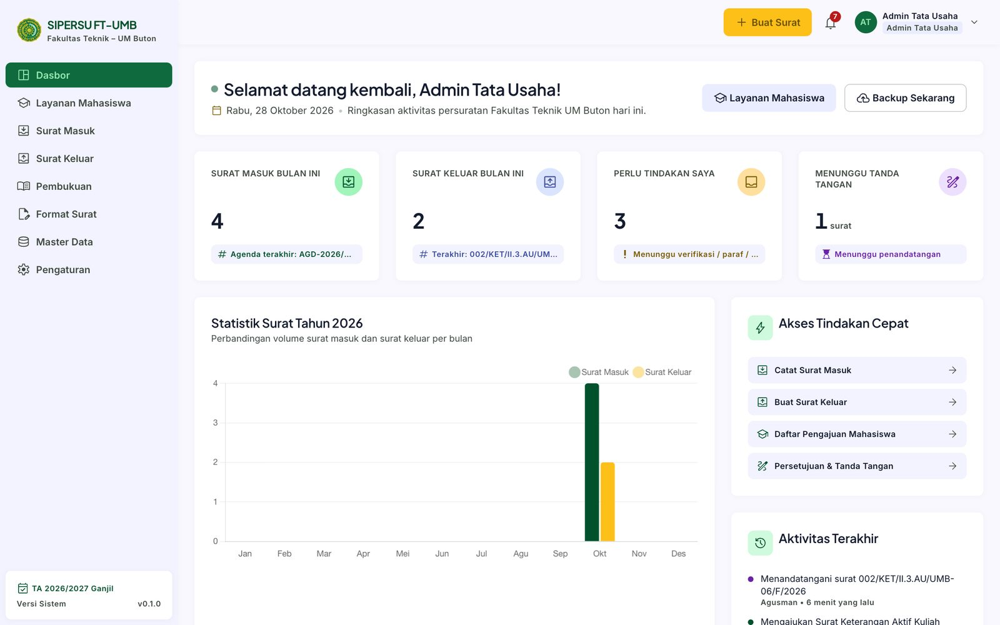
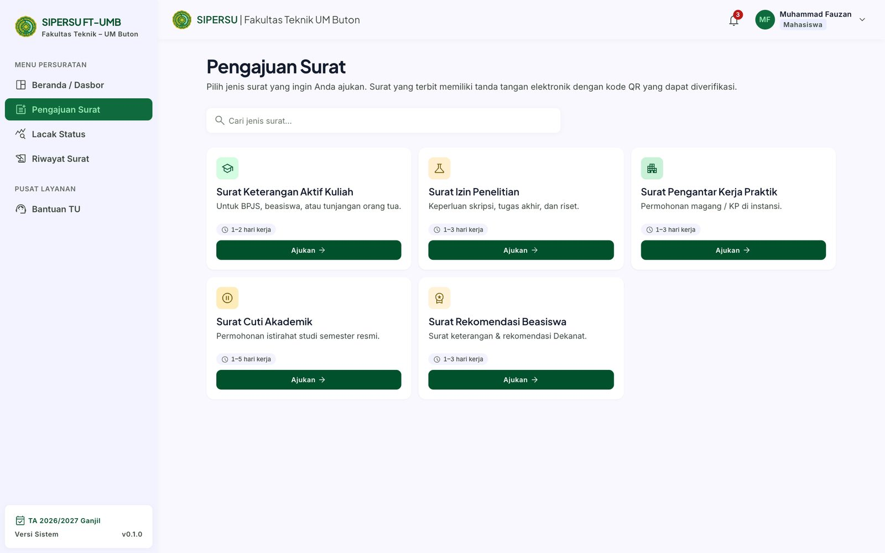
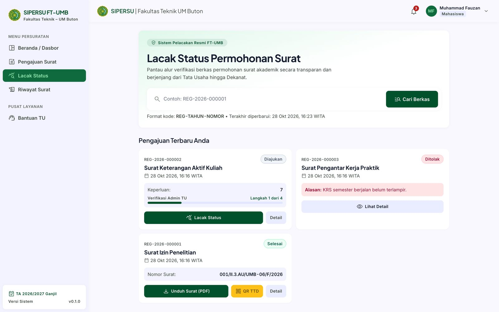
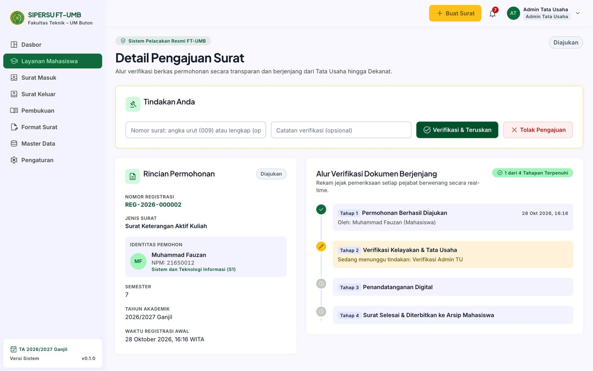
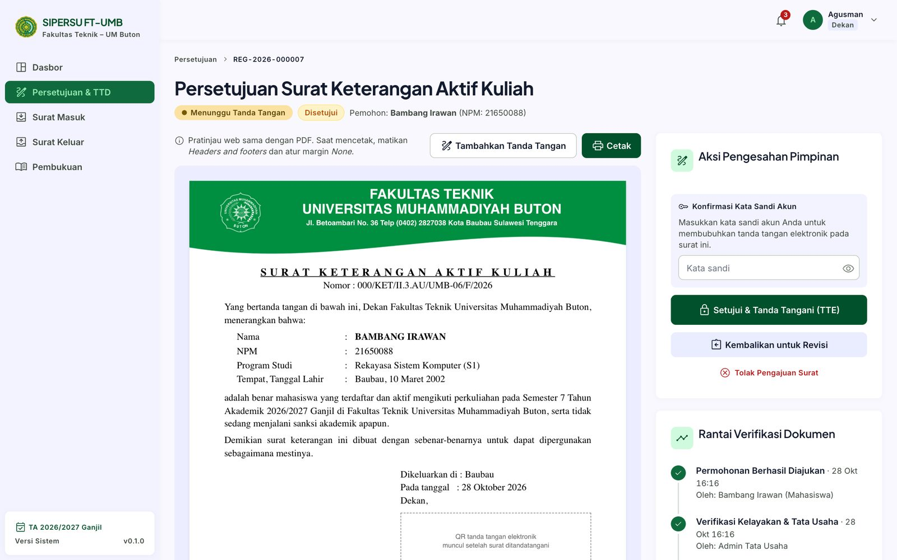
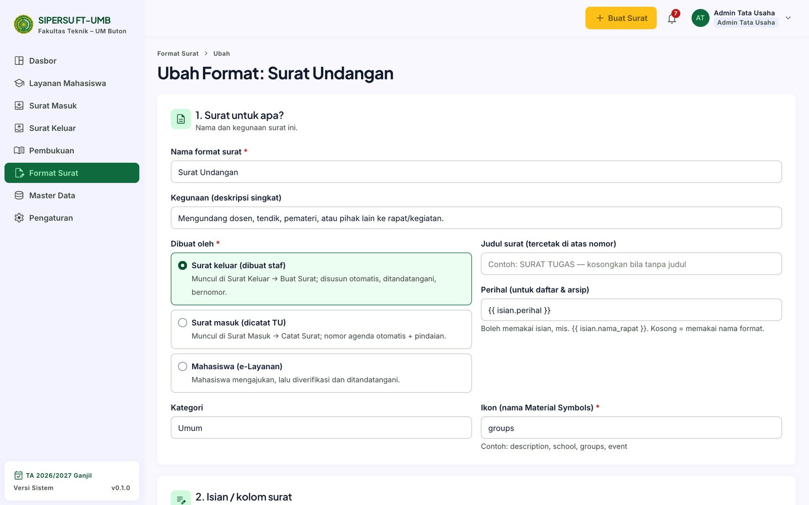
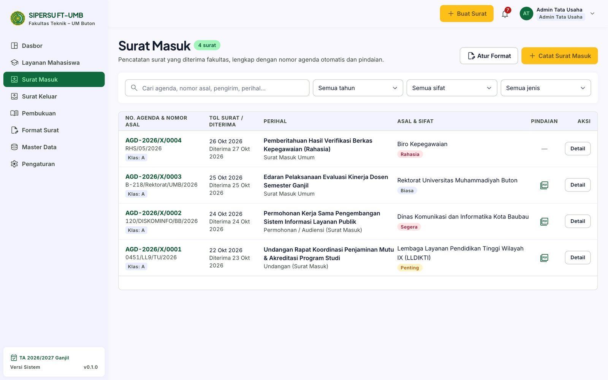
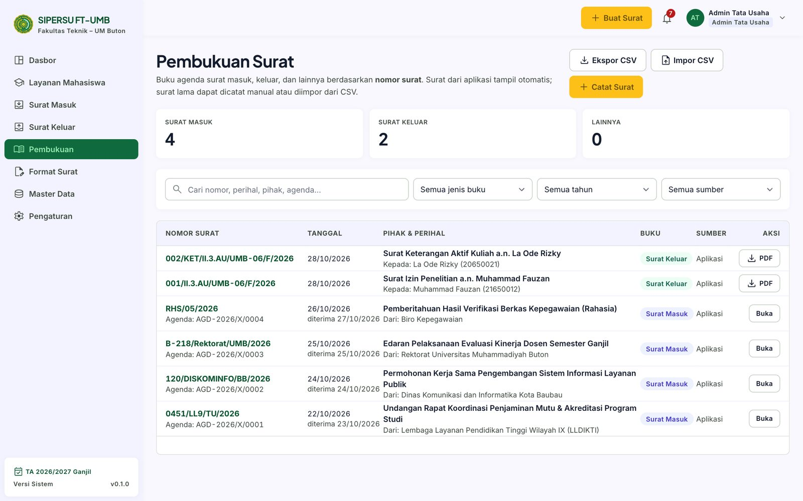
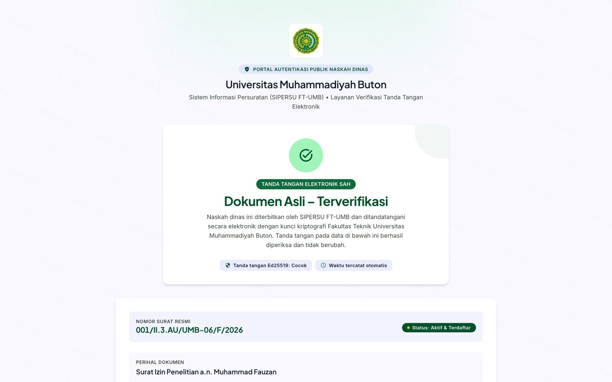

SIPERSU FT-UMB
Pengajuan surat, surat keluar dan masuk, nomor sesuai pedoman, serta tanda tangan elektronik yang dapat diverifikasi.


Persuratan manual menyulitkan semua pihak
Tantangan umum proses manual
- Status tidak jelas. Mahasiswa harus bertanya langsung ke TU untuk tahu surat sudah sampai mana.
- Nomor rawan salah. Nomor ganda, loncat, atau tidak sesuai pedoman.
- Keaslian sulit dibuktikan. Surat cetak mudah ditiru atau diubah.
- Jejak tercecer. Siapa menyetujui kapan sulit ditelusuri; arsip tersebar.
Dengan SIPERSU
- Status terlacak. Setiap tahap tampil di garis waktu, lengkap dengan pelaksana dan waktunya.
- Nomor otomatis atau manual. Mengikuti Pedoman Tata Naskah Dinas UM Buton, tidak pernah ganda.
- Dapat diverifikasi. Surat ber-QR ditandatangani digital dan dicek lewat QR.
- Semua tercatat. Log aktivitas, riwayat persetujuan, dan buku agenda terpusat.
Satu sistem untuk tiga kebutuhan
e-Layanan mahasiswa
Ajukan surat dari layar, lacak status, unduh PDF saat terbit.
5 jenis surat bawaan
Persuratan staf
Surat keluar dari format siap pakai, surat masuk dengan nomor agenda, serta buku agenda terpusat.
9 format staf, 3 jenis surat masuk
Tanda tangan digital
Tanda tangan elektronik pejabat, QR pada surat, dan halaman pemeriksa keaslian.
Ed25519 + SHA-256
Tujuh peran, hak akses yang jelas
Mahasiswa
Mengajukan, melacak, mengunduh surat
Dosen / Tendik
Membuat surat keluar
Kaprodi
Memverifikasi pengajuan prodinya sendiri
Wakil Dekan
Memaraf surat yang memerlukannya
Dekan
Menandatangani surat
Admin TU
Verifikasi, nomor, surat masuk, format, master data, backup
Super Admin
Seperti Admin TU; tidak dapat menandatangani
Hanya pemegang jabatan penandatangan yang dapat menandatangani. Admin TU dan Super Admin tidak bisa.
Alur pengajuan surat mahasiswa
Diajukan
Mahasiswa mengisi formulir dan unggah berkas
Diverifikasi
TU atau Kaprodi memeriksa; surat disusun otomatis
Paraf
Wakil Dekan, hanya untuk jenis surat yang memerlukan
Ditandatangani
Dekan menandatangani; nomor dan PDF terbit
Selesai
TU menutup pengajuan setelah surat diserahkan
- Ditolak atau dikembalikan: alasan atau catatan revisi wajib diisi dan terbaca pemohon.
- Nomor surat terbit saat tanda tangan, tidak lebih awal dan tidak pernah ganda.
- Tenggat layanan (SLA) per jenis surat, 2 sampai 5 hari kerja.
Mahasiswa mengurus surat dari layar sendiri
Pilih jenis surat; waktu proses tertera

Lacak status dengan nomor registrasi
- Formulir tiga langkah: data akademik, berkas persyaratan (PDF/JPG/PNG, maks 2 MB), ringkasan.
- Unduh PDF begitu surat ditandatangani; riwayat tersimpan di akun.
TU memeriksa, sistem menyusun surat

- Satu halaman: rincian permohonan, identitas pemohon, berkas, dan garis waktu.
- Tindakan: isi nomor surat bila penomoran manual, tambah catatan, lalu Verifikasi & Teruskan atau Tolak.
- Otomatis: surat disusun dari templat dan diteruskan ke paraf atau tanda tangan sesuai aturan jenis surat.
- Kaprodi memverifikasi sendiri untuk jenis surat tertentu, hanya mahasiswa prodinya.
Pimpinan mengesahkan dengan kata sandi

- Pratinjau sama dengan PDF. Nomor tampil 000; nomor asli terbit saat tanda tangan.
- Konfirmasi kata sandi akun sebelum Setujui & Tanda Tangani (TTE).
- Tiga pilihan: tanda tangani, kembalikan untuk revisi, atau tolak (catatan atau alasan wajib).
- Satu transaksi: nomor, QR, tanda tangan digital, PDF, dan hash disimpan bersama, atau dibatalkan bersama.
Dua bentuk surat: ber-QR atau tanpa QR
| Surat ber-QR (TTE) | Surat tanpa QR | |
|---|---|---|
| Pengesahan | Tanda tangan elektronik pejabat | Tanda tangan basah dan cap |
| Persetujuan di aplikasi | Paraf (opsional), lalu tanda tangan pejabat | Tidak ada; langsung terbit |
| 2 halaman: surat + Lembar Riwayat Dokumen; QR dan spesimen tanda tangan | 1 halaman; ruang tanda tangan dan stempel dikosongkan | |
| Nomor | Terbit saat tanda tangan | Terbit saat tombol Terbitkan Surat |
| Verifikasi publik | Ya, lewat QR | Tidak |
Pembuat surat memilih bentuk di awal; bawaannya mengikuti format surat. Surat yang sudah terbit tidak dihapus, tetapi dibatalkan dengan alasan, dan status batal tampil di halaman verifikasi.
TU menyiapkan format surat tanpa coding
- Surat untuk apa: staf, surat masuk, atau mahasiswa.
- Isian: teks, tanggal, angka, pilihan, daftar, dan tabel.
- Templat isi dengan pratinjau dan posisi tanda tangan.
- Aturan alur: pemverifikasi, paraf, penandatangan, tenggat.
- Penomoran: seruan dan pokok masalah.

Nomor surat mengikuti pedoman UM Buton
Otomatis (bawaan)
Nomor dibuat sistem saat surat terbit, di dalam transaksi basis data. Dua penandatanganan bersamaan tidak pernah mendapat nomor sama.
Manual (diisi TU)
TU mengetik nomor sebelum surat berjalan: cukup angka urut (mis. 9) atau nomor lengkap. Nomor yang bentrok dengan surat lain atau Pembukuan ditolak.
Surat masuk dan buku agenda terpusat

Surat masuk: nomor agenda otomatis, sifat, pindaian

Pembukuan: masuk, keluar, dan surat lama dalam satu buku
- Sifat surat: biasa, penting, segera, rahasia; surat rahasia hanya terlihat Admin, Dekan, dan Wakil Dekan.
- Surat lama masuk lewat Impor CSV (periksa dulu, nomor kembar dilewati) dan dapat diekspor kembali.
Keaslian surat dapat diperiksa lewat QR
Petugas TU juga dapat mencocokkan berkas PDF dengan hash yang tersimpan, dan melihat status batal.

Yang terjamin adalah keaslian dan keutuhan, bukan kerahasiaan isi surat.
Apa isi QR pada surat
http://sipersu.ft.umbuton.ac.id/verifikasialamat halaman verifikasi#pemisah (fragment)eyJ2IjoxLCJuIjoi…payload: data surat. C0hioENjzZTK…tanda tangan digitalData yang disegel
- Nomor surat
- Perihal
- Nama dan jabatan penanda tangan
- Tanggal surat
- SHA-256 isi surat
- Versi format
Saat QR dipindai
- Peramban membuka halaman verifikasi statis
- Bagian setelah # dibaca di perangkat Anda, tidak dikirim ke server
- Tanda tangan diperiksa dengan kunci publik yang tertanam
- Hasil: Dokumen Asli atau Tidak Valid
Yang perlu diingat
- Cocokkan nomor, perihal, dan nama di layar dengan surat di tangan
- Pembatalan hanya terlihat di verifikasi lengkap oleh TU
- Isi surat tidak dirahasiakan
Keamanan dan jejak audit
Hanya jaringan kampus
IP di luar jaringan privat ditolak (403)
Login terlindungi
Kata sandi ter-hash; 5 kali salah dalam semenit memblokir sementara
Tanda tangan terbatas
Hanya pemegang jabatan; wajib konfirmasi kata sandi
Hak akses per peran
Dicek ulang di server menurut peran, prodi, dan status surat
Surat rahasia
Disembunyikan dari Kaprodi dan disamarkan di Pembukuan
Jejak audit
Log aktivitas, riwayat persetujuan, dan lembar riwayat pada PDF
Berjalan lokal, dijaga backup 3-2-1
salinan data
server, HDD eksternal, flashdisk arsip
jenis media
HDD dan flashdisk
di luar lokasi
flashdisk di brankas Dekanat; Google Drive opsional
- Server: satu laptop atau PC Windows dengan Laragon (Apache + PHP) dan basis data SQLite. Tanpa internet untuk pemakaian harian.
- Jadwal otomatis: backup harian 16.30 ke HDD (30 terakhir); email antre tiap menit; Google Drive Jumat 17.30 bila tersedia.
- Backup terenkripsi: ZIP AES-256 berisi basis data, berkas, kunci tanda tangan, dan pengaturan. Pengingat uji pemulihan tiap 30 hari.
Status dan langkah berikutnya
Sudah berjalan
- e-Layanan mahasiswa
- Surat keluar ber-QR dan tanpa QR
- Surat masuk dan Pembukuan
- Format Surat dan Master Data
- Penomoran sesuai pedoman
- Verifikasi QR, notifikasi, log, backup
Belum aktif
- Disposisi surat masuk
- Arsip digital
- Laporan
Sebelum dipakai
- Ganti semua sandi akun contoh
- Isi pejabat, prodi, klasifikasi asli
- Unggah spesimen tanda tangan dan stempel
- Pilih alamat server yang stabil
- Simpan salinan kunci di tempat aman
- Satu kali backup dan uji pemulihan
Demo dan tanya jawab
- panduan-pengguna.md langkah demi langkah per peran
- dokumentasi-sistem.md gambaran sistem, alur, keamanan, operasional
- cara-kerja-tanda-tangan-elektronik.md kunci, QR, dan verifikasi
- contoh-surat/ 15 pasang contoh PDF
- ../INSTALL.md pemasangan di Windows